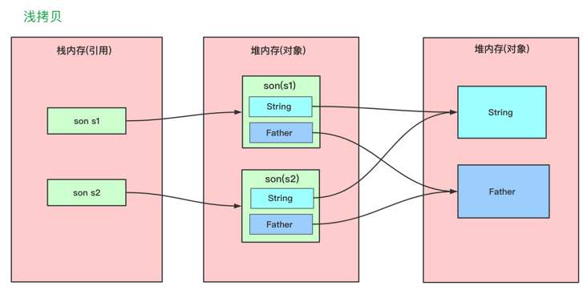
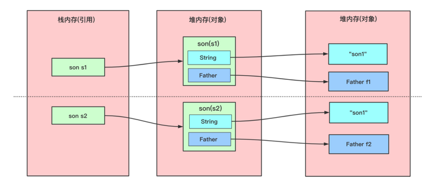
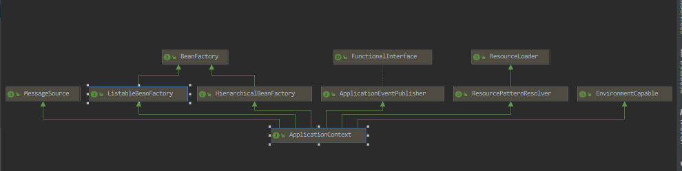
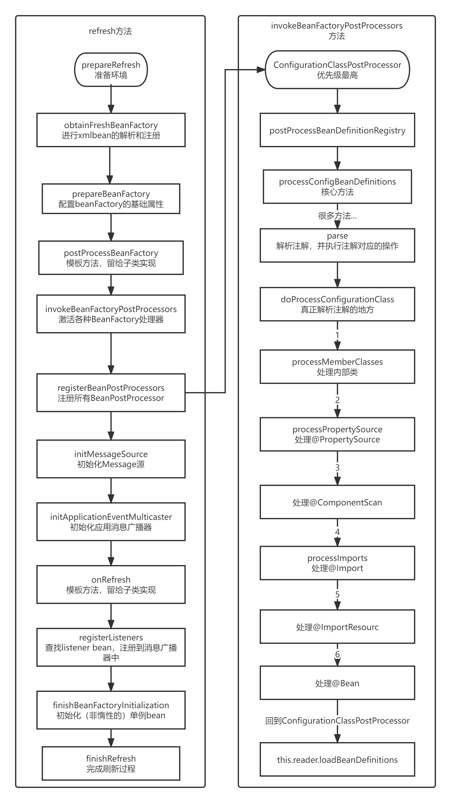
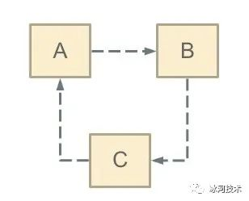
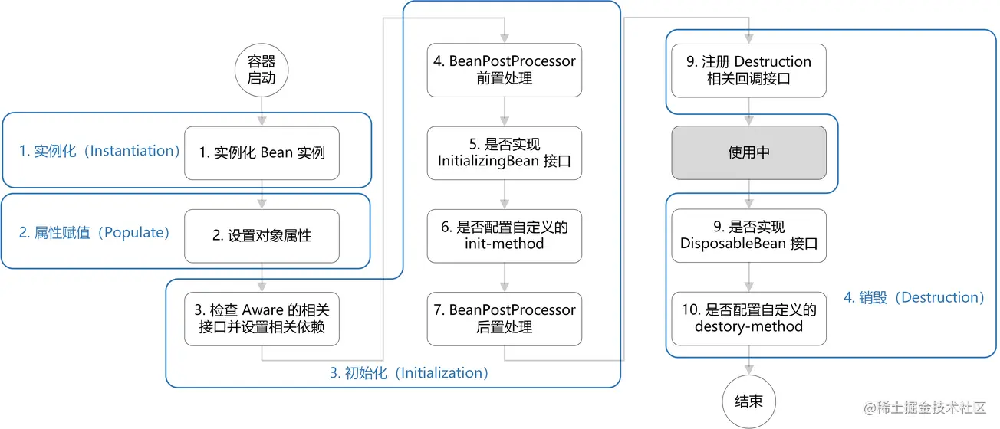
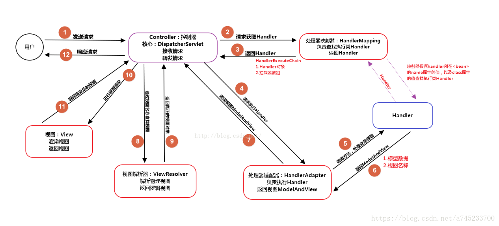

这里记录遇到、听到、见到的面试题，可以说是总结复盘的好地方
[TOC]
阿里：三个线程交替打印abc。
手写单例模式双重校验锁
分布式事务
接口幂等性
HashMap的底层原理
数组+链表+红黑树
https://tech.meituan.com/2016/06/24/java-hashmap.html
jvm相关
mq怎么保证消息的可靠性
拷贝
在拷贝中分为引用拷贝、浅拷贝、深拷贝
引用拷贝
引用拷贝会生成一个新的对象引用地址，但是两个最终指向依然是同一个对象。
class Son {
String name;
int age;
public Son(String name, int age) {
this.name = name;
this.age = age;
}
}
public class test {
public static void main(String[] args) {
Son s1 = new Son("son1", 12);
Son s2 = s1;
s1.age = 22;
System.out.println(s1);
System.out.println(s2);
System.out.println("s1的age:" + s1.age);
System.out.println("s2的age:" + s2.age);
System.out.println("s1==s2" + (s1 == s2));//相等
}
}
浅拷贝
浅拷贝会创建一个新对象，新对象和原对象本身没有任何关系，新对象和原对象不等，但是新对象的属性和可能会和老对象相同。具体可以看如下区别：
- 如果属性是基本类型(int,double,long,boolean等)，拷贝的就是基本类型的值；
- 如果属性是引用类型，拷贝的就是内存地址（即复制引用但不复制引用的对象） ，因此如果其中一个对象改变了这个地址，就会影响到另一个对象。
如果用一张图来描述一下浅拷贝，它应该是这样的：

如何实现浅拷贝呢？也很简单，就是在需要拷贝的类上实现Cloneable接口并重写其clone()方法。
@Data
public class Father {
private String name;
}
@Data
public class Son implements Cloneable{
private String age;
private Father father;
@Override
protected Son clone() throws CloneNotSupportedException {
return (Son) super.clone();
}
public static void main(String[] args) throws CloneNotSupportedException {
Son son1 = new Son();
son1.setAge("1");
Father father = new Father();
father.setName("爸爸");
son1.setFather(father);
// 浅拷贝
Son son2 = son1.clone();
Son son3 = new Son();
son3.setFather(son2.getFather());
son3.setAge(son2.getAge());
System.out.println(son1);
System.out.println(son2);
System.out.println(son3);
System.out.println(son1 == son2);
System.out.println(son1.getFather() == son2.getFather());
// 改变值，发现所有值都变了
son2.getFather().setName("儿砸");
son2.setAge("123");
System.out.println(son1);
System.out.println(son2);
System.out.println(son3);
}
}
输出
Son(age=1, father=Father(name=爸爸))
Son(age=1, father=Father(name=爸爸))
Son(age=1, father=Father(name=爸爸))
false
true
Son(age=1, father=Father(name=儿砸))
Son(age=123, father=Father(name=儿砸))
Son(age=1, father=Father(name=儿砸))
很明显的看到father这个对象，复制的是引用并不是地址
深拷贝
对于上述的问题虽然拷贝的两个对象不同，但其内部的一些引用还是相同的，怎么样绝对的拷贝这个对象，使这个对象完全独立于原对象呢？就使用我们的深拷贝了。深拷贝：在对引用数据类型进行拷贝的时候，创建了一个新的对象，并且复制其内的成员变量。

在具体实现深拷贝上，这里提供两个方式，重写clone()方法和序列法。
重写clone()方法
如果使用重写clone()方法实现深拷贝，那么要将类中所有自定义引用变量的类也去实现Cloneable接口实现clone()方法。对于字符类可以创建一个新的字符串实现拷贝。
对于上述代码，Father类实现Cloneable接口并重写clone()方法。son的clone()方法需要对各个引用都拷贝一遍。
//Father clone()方法
@Override
protected Father clone() throws CloneNotSupportedException {
return (Father) super.clone();
}
//Son clone()方法
@Override
protected Son clone() throws CloneNotSupportedException {
Son son= (Son) super.clone();//待返回克隆的对象
son.name=new String(name);
son.father=father.clone();
return son;
}
其他代码不变，执行结果如下：
Son(age=1, father=Father(name=爸爸))
Son(age=1, father=Father(name=爸爸))
Son(age=1, father=Father(name=爸爸))
false
false
Son(age=1, father=Father(name=爸爸))
Son(age=123, father=Father(name=儿砸))
Son(age=1, father=Father(name=儿砸))
序列法
通过fastjson完成。。。
spring相关
ApplicationContext 和BeanFactory 和 FactoryBean的区别以及联系
FactoryBean
Spring中有两种类型的Bean，一种是普通Bean，另一种是工厂Bean，即FactoryBean，这两种Bean都被容器管理，以Bean结尾，表示它是一个Bean，不同于普通Bean的是：实现了FactoryBean接口的Bean，通过 getBean() 方法返回的不是FactoryBean 本身，而是 FactoryBean.getObject() 方法所返回的对象，如果想得到FactoryBean必须通过在 '&' + beanName的方式获取，说白了这就是个简单工厂模式,简单例子：
public interface Car {
void speed();
}
public class Moto implements Car{
@Override
public void speed() {
System.out.println("摩托可以开100码？");
}
}
定义bean 实现FactoryBean接口
@Component
public class TestFactoryBean implements FactoryBean<Car> {
@Override
public Car getObject() throws Exception {
return new Moto();
}
@Override
public Class<?> getObjectType() {
return null;
}
}
// 测试
@Test
public void testBean() {
Object object = SpringContextUtil.getBean("testFactoryBean");
System.out.println(object.getClass().getName());
// 结果为：com.zt.javastudy.spring.Moto
}
这也相当于 FactoryBean.getObject() 代理了getBean() 方法
ObjectFactory
是一个普通的对象工厂接口，spring对ObjectFactory的应用之一就是，将创建对象 的步骤封装到ObjectFactory中 交给自定义的Scope来选择是否需要创建对象来灵活的实现scope，在spring的三级缓存中放的就是objectFactory
BeanFactory
BeanFactory是一个工厂类(接口)，是负责生产和管理bean的一个工厂，是IOC容器的顶层方法
通过 BeanFactory 启动 IoC 容器时，并不会初始化配置文件当中定义的 Bean，初始化的动作发生在第一次调用 getBean() 的时候。对于单实例的 Bean 来说，BeanFactory 会缓存 Bean 的实例，所以第二次使用 getBean() 方法时，可以直接从 IoC 容器的缓存中来获取 Bean 的实例了**,bean定义的载入和依赖的注入是两个独立的过程**
使用
BeanFactory beanFactory = new XmlBeanFactory(new ClassPathResource("applicationContext.xml"));
ApplicationContext
ApplicationContext由BeanFactory派生而来，提供了更多面向实际应用的功能
- MessageSource, 提供国际化的消息访问
- 资源访问，如URL和文件
- 事件传播特性，即支持aop特性
- 载入多个（有继承关系）上下文 ，使得每一个上下文都专注于一个特定的层次，比如应用的web层

使用
ApplicationContext applicationContext = new ClassPathXmlApplicationContext("classpath*:applicationContext.xml");
总结
-
ApplicationContext继承了BeanFactory，BeanFactory是Spring中比较原始的Factory，它不支持AOP、Web等Spring插件，而ApplicationContext不仅包含了BeanFactory的所有功能，还支持Spring的各种插件，还以一种面向框架的方式工作以及对上下文进行分层和实现继承
-
BeanFactory在初始化容器时，并未实例化 Bean。直到 Bean 被调用时（调用getBean()方法）才会被实例化。对于单实例的 Bean 来说，BeanFactory 会缓存 Bean 的实例，所以第二次使用 getBean() 方法时，可以直接从 IoC 容器的缓存中来获取 Bean 的实例了。
-
ApplicationContext在初始化应用上下文时，会实例化所有单实例的 Bean，所以相对来说，占用空间较大、初始化时间会比 BeanFactory 稍长。
refresh方法
Spring容器创建之后，会调用它的refresh方法刷新Spring应用的上下文
public void refresh() throws BeansException, IllegalStateException {
synchronized (this.startupShutdownMonitor) {
// Prepare this context for refreshing.
prepareRefresh();
// Tell the subclass to refresh the internal bean factory.
ConfigurableListableBeanFactory beanFactory = obtainFreshBeanFactory();
// Prepare the bean factory for use in this context.
prepareBeanFactory(beanFactory);
try {
// Allows post-processing of the bean factory in context subclasses.
postProcessBeanFactory(beanFactory);
// Invoke factory processors registered as beans in the context.
invokeBeanFactoryPostProcessors(beanFactory);
// Register bean processors that intercept bean creation.
registerBeanPostProcessors(beanFactory);
// Initialize message source for this context.
initMessageSource();
// Initialize event multicaster for this context.
initApplicationEventMulticaster();
// Initialize other special beans in specific context subclasses.
onRefresh();
// Check for listener beans and register them.
registerListeners();
// Instantiate all remaining (non-lazy-init) singletons.
finishBeanFactoryInitialization(beanFactory);
// Last step: publish corresponding event.
finishRefresh();
}
catch (BeansException ex) {
if (logger.isWarnEnabled()) {
logger.warn("Exception encountered during context initialization - " +
"cancelling refresh attempt: " + ex);
}
// Destroy already created singletons to avoid dangling resources.
destroyBeans();
// Reset 'active' flag.
cancelRefresh(ex);
// Propagate exception to caller.
throw ex;
}
finally {
// Reset common introspection caches in Spring's core, since we
// might not ever need metadata for singleton beans anymore...
resetCommonCaches();
}
}
}
-
prepareRefresh，初始化前的准备工作，例如对系统属性或者环境变量进行准备及验证
-
obtainFreshBeanFactory，初始化BeanFactory，并进行XML文件读取
-
prepareBeanFactory，对BeanFactory进行各种功能填充。@Qualifier与@Autowired应该是大家非常熟悉的注解，那么这两个注解正是在这一步骤中增加的支持
-
postProcessBeanFactory，子类覆盖方法做额外的处理
- 增加对SPEL语言的支持也就是占位符。
- 增加对属性编辑器的支持。
- 增加对一些内置类，比如EnvironmentAware、MessageSourceAware的信息注入。
- 设置了依赖功能可忽略的接口。
- 注册一些固定依赖的属性。
- 增加AspectJ的支持（会在第7章中进行详细的讲解）。
- 将相关环境变量及属性注册以单例模式注册
-
invokeBeanFactoryPostProcessors，执行bean工厂的扩展方法，从Spring容器中找出BeanDefinitionRegistryPostProcessor和BeanFactoryPostProcessor接口的实现类并按照一定的规则顺序进行执行，这里代码很复杂，主要就是有两个方面一个是执行顺序，一个是执行了什么
- 执行顺序：ConfigurationClassPostProcessor这个postProcessBeanDefinitionRegistry方法优先级最高
- postProcessBeanDefinitionRegistry中processConfigBeanDefinitions为核心方法，processConfigBeanDefinitions有parse、this.reader.loadBeanDefinitions需要注意
- parse，处理注解，注解的处理顺序为内部类、PropertySources注解、ComponentScans注解、Import注解、ImportResource注解、Bean注解、接口上的默认方法、继续递归到它的父类
- loadBeanDefinitions、只处理@import的类
-
registerBeanPostProcessors，注册拦截bean创建的bean处理器，这里只是注册，真正的调用是在getBean时候， 从Spring容器中找出的BeanPostProcessor接口的bean，并设置到BeanFactory的属性中
-
initMessageSource，为上下文初始化Message源，即对不同语言的消息体进行国际化处理
-
initApplicationEventMulticaster，初始化应用消息广播器，并放入“applicationEventMulticaster”bean中
-
onRefresh，一个模板方法，不同的Spring容器做不同的事情。
比如web程序的容器ServletWebServerApplicationContext中会调用createWebServer方法去创建内置的Servlet容器，这意味着tomcat等是在这一步启动的。目前SpringBoot只支持3种内置的Servlet容器：
-
Tomcat
-
Jetty
-
Undertow
-
-
registerListeners，在所有注册的bean中查找listener bean，注册到消息广播器中
-
finishBeanFactoryInitialization，初始化（非惰性的）单例bean，这个方法是核心，调用了getBean方法
-
finishRefresh，完成刷新过程，通知生命周期处理器lifecycleProcessor刷新过程，同时发出Context RefreshEvent通知别人

getBean
这个方法就是bean的获取以及创建的方法，首先先看整体流程图

doGetBean
protected <T> T doGetBean(final String name, @Nullable final Class<T> requiredType,
@Nullable final Object[] args, boolean typeCheckOnly) throws BeansException {
// 处理别名BeanName、处理带&符的工厂BeanName
final String beanName = transformedBeanName(name);
Object bean;
// 先尝试从缓存中获取Bean实例，这个位置就是三级缓存解决循环依赖的方法
Object sharedInstance = getSingleton(beanName);
if (sharedInstance != null && args == null) {
if (logger.isDebugEnabled()) {
if (isSingletonCurrentlyInCreation(beanName)) {
logger.debug("Returning eagerly cached instance of singleton bean '" + beanName +
"' that is not fully initialized yet - a consequence of a circular reference");
}
else {
logger.debug("Returning cached instance of singleton bean '" + beanName + "'");
}
}
// 1. 如果 sharedInstance 是普通的 Bean 实例，则下面的方法会直接返回
// 2. 如果 sharedInstance 是工厂Bean类型，则需要获取 getObject 方法
bean = getObjectForBeanInstance(sharedInstance, name, beanName, null);
}
else {
// 原型模式循环依赖直接抛出异常.
if (isPrototypeCurrentlyInCreation(beanName)) {
throw new BeanCurrentlyInCreationException(beanName);
}
// 当前 bean 不存在于当前bean工厂，则到父工厂查找 bean 实例
BeanFactory parentBeanFactory = getParentBeanFactory();
if (parentBeanFactory != null && !containsBeanDefinition(beanName)) {
// Not found -> check parent.
String nameToLookup = originalBeanName(name);
if (parentBeanFactory instanceof AbstractBeanFactory) {
return ((AbstractBeanFactory) parentBeanFactory).doGetBean(
nameToLookup, requiredType, args, typeCheckOnly);
}
else if (args != null) {
// Delegation to parent with explicit args.
return (T) parentBeanFactory.getBean(nameToLookup, args);
}
else {
// No args -> delegate to standard getBean method.
return parentBeanFactory.getBean(nameToLookup, requiredType);
}
}
if (!typeCheckOnly) {
markBeanAsCreated(beanName);
}
try {
final RootBeanDefinition mbd = getMergedLocalBeanDefinition(beanName);
checkMergedBeanDefinition(mbd, beanName, args);
// Guarantee initialization of beans that the current bean depends on.
String[] dependsOn = mbd.getDependsOn();
if (dependsOn != null) {
for (String dep : dependsOn) {
if (isDependent(beanName, dep)) {
throw new BeanCreationException(mbd.getResourceDescription(), beanName,
"Circular depends-on relationship between '" + beanName + "' and '" + dep + "'");
}
registerDependentBean(dep, beanName);
try {
getBean(dep);
}
catch (NoSuchBeanDefinitionException ex) {
throw new BeanCreationException(mbd.getResourceDescription(), beanName,
"'" + beanName + "' depends on missing bean '" + dep + "'", ex);
}
}
}
// 创建单例 bean 实例
if (mbd.isSingleton()) {
sharedInstance = getSingleton(beanName, () -> {
try {
// 真正创建 bean的地方
return createBean(beanName, mbd, args);
}
catch (BeansException ex) {
// Explicitly remove instance from singleton cache: It might have been put there
// eagerly by the creation process, to allow for circular reference resolution.
// Also remove any beans that received a temporary reference to the bean.
destroySingleton(beanName);
throw ex;
}
});
bean = getObjectForBeanInstance(sharedInstance, name, beanName, mbd);
}
else if (mbd.isPrototype()) {
// It's a prototype -> create a new instance.
Object prototypeInstance = null;
try {
beforePrototypeCreation(beanName);
prototypeInstance = createBean(beanName, mbd, args);
}
finally {
afterPrototypeCreation(beanName);
}
bean = getObjectForBeanInstance(prototypeInstance, name, beanName, mbd);
}
else {
String scopeName = mbd.getScope();
final Scope scope = this.scopes.get(scopeName);
if (scope == null) {
throw new IllegalStateException("No Scope registered for scope name '" + scopeName + "'");
}
try {
Object scopedInstance = scope.get(beanName, () -> {
beforePrototypeCreation(beanName);
try {
return createBean(beanName, mbd, args);
}
finally {
afterPrototypeCreation(beanName);
}
});
bean = getObjectForBeanInstance(scopedInstance, name, beanName, mbd);
}
catch (IllegalStateException ex) {
throw new BeanCreationException(beanName,
"Scope '" + scopeName + "' is not active for the current thread; consider " +
"defining a scoped proxy for this bean if you intend to refer to it from a singleton",
ex);
}
}
}
catch (BeansException ex) {
cleanupAfterBeanCreationFailure(beanName);
throw ex;
}
}
// Check if required type matches the type of the actual bean instance.
if (requiredType != null && !requiredType.isInstance(bean)) {
try {
T convertedBean = getTypeConverter().convertIfNecessary(bean, requiredType);
if (convertedBean == null) {
throw new BeanNotOfRequiredTypeException(name, requiredType, bean.getClass());
}
return convertedBean;
}
catch (TypeMismatchException ex) {
if (logger.isDebugEnabled()) {
logger.debug("Failed to convert bean '" + name + "' to required type '" +
ClassUtils.getQualifiedName(requiredType) + "'", ex);
}
throw new BeanNotOfRequiredTypeException(name, requiredType, bean.getClass());
}
}
return (T) bean;
}
其中getSingleton()方法是解决循环依赖的地方
// singletonObjects：完成初始化的单例对象的cache（一级缓存）
private final Map<String, Object> singletonObjects = new ConcurrentHashMap<String, Object>(64);
// 完成实例化但是尚未初始化的，提前暴光的单例对象的Cache （二级缓存）
private final Map<String, Object> earlySingletonObjects = new HashMap<String, Object>(16);
// 进入实例化阶段的单例对象工厂的cache （三级缓存）
private final Map<String, ObjectFactory<?>> singletonFactories = new HashMap<String, ObjectFactory<?>>(16);
protected Object getSingleton(String beanName, boolean allowEarlyReference) {
Object singletonObject = this.singletonObjects.get(beanName);
if (singletonObject == null && isSingletonCurrentlyInCreation(beanName)) {
synchronized (this.singletonObjects) {
singletonObject = this.earlySingletonObjects.get(beanName);
if (singletonObject == null && allowEarlyReference) {
ObjectFactory<?> singletonFactory = this.singletonFactories.get(beanName);
if (singletonFactory != null) {
singletonObject = singletonFactory.getObject();
this.earlySingletonObjects.put(beanName, singletonObject);
this.singletonFactories.remove(beanName);
}
}
}
}
return singletonObject;
}
这个方法就是先从一级缓存取，一级取不到，去二级缓存中取，二级缓存取不到，然后去三级缓存取，如果三级缓存中有那么移除三级缓存加入二级缓存，根据流程图，下一个重要的方法还是getSingleton哈哈，不过这个getSingleton中重要的是createBean方法
getSingleton
如果缓存中不存在已经加载的单例bean就需要从头开始bean的加载过程了，而Spring中使用getSingleton的重载方法实现bean的加载过程。
public Object getSingleton(String beanName, ObjectFactory<?> singletonFactory) {
Assert.notNull(beanName, "Bean name must not be null");
synchronized (this.singletonObjects) {
// 一级缓存
Object singletonObject = this.singletonObjects.get(beanName);
if (singletonObject == null) {
// 是否正在创建中
if (this.singletonsCurrentlyInDestruction) {
throw new BeanCreationNotAllowedException(beanName,
"Singleton bean creation not allowed while singletons of this factory are in destruction " +
"(Do not request a bean from a BeanFactory in a destroy method implementation!)");
}
if (logger.isDebugEnabled()) {
logger.debug("Creating shared instance of singleton bean '" + beanName + "'");
}
// 记录加载状态
beforeSingletonCreation(beanName);
boolean newSingleton = false;
boolean recordSuppressedExceptions = (this.suppressedExceptions == null);
if (recordSuppressedExceptions) {
this.suppressedExceptions = new LinkedHashSet<>();
}
try {
// 回调createBean
singletonObject = singletonFactory.getObject();
newSingleton = true;
}
catch (IllegalStateException ex) {
// Has the singleton object implicitly appeared in the meantime ->
// if yes, proceed with it since the exception indicates that state.
singletonObject = this.singletonObjects.get(beanName);
if (singletonObject == null) {
throw ex;
}
}
catch (BeanCreationException ex) {
if (recordSuppressedExceptions) {
for (Exception suppressedException : this.suppressedExceptions) {
ex.addRelatedCause(suppressedException);
}
}
throw ex;
}
finally {
if (recordSuppressedExceptions) {
this.suppressedExceptions = null;
}
// 清除加载状态
afterSingletonCreation(beanName);
}
if (newSingleton) {
// 加入缓存
addSingleton(beanName, singletonObject);
}
}
return singletonObject;
}
}
// this.singletonsCurrentlyInCreation.add(beanName) 将该bean加入正在加载的bean set集合中
protected void beforeSingletonCreation(String beanName) {
if (!this.inCreationCheckExclusions.contains(beanName) && !this.singletonsCurrentlyInCreation.add(beanName)) {
throw new BeanCurrentlyInCreationException(beanName);
}
}
// this.singletonsCurrentlyInCreation.remove(beanName) 将该bean从正在加载bean的set集合中删除
protected void afterSingletonCreation(String beanName) {
if (!this.inCreationCheckExclusions.contains(beanName) && !this.singletonsCurrentlyInCreation.remove(beanName)) {
throw new IllegalStateException("Singleton '" + beanName + "' isn't currently in creation");
}
}
// 清除二、三级缓存加入一级缓存
protected void addSingleton(String beanName, Object singletonObject) {
synchronized (this.singletonObjects) {
// 加入一级缓存
this.singletonObjects.put(beanName, singletonObject);
// 从三级缓存移除
this.singletonFactories.remove(beanName);
// 从二级缓存移除
this.earlySingletonObjects.remove(beanName);
// 加入单例注册set
this.registeredSingletons.add(beanName);
}
}
在这个方法中singletonFactory.getObject会调用createBean方法去创建bean（一个完整的bean，经过了实例化、属性填充、初始化），创建完bean后会将bean加入到一级缓存
createBean
protected Object createBean(String beanName, RootBeanDefinition mbd, @Nullable Object[] args)
throws BeanCreationException {
if (logger.isTraceEnabled()) {
logger.trace("Creating instance of bean '" + beanName + "'");
}
RootBeanDefinition mbdToUse = mbd;
// Make sure bean class is actually resolved at this point, and
// clone the bean definition in case of a dynamically resolved Class
// which cannot be stored in the shared merged bean definition.
// 解析class
Class<?> resolvedClass = resolveBeanClass(mbd, beanName);
if (resolvedClass != null && !mbd.hasBeanClass() && mbd.getBeanClassName() != null) {
mbdToUse = new RootBeanDefinition(mbd);
mbdToUse.setBeanClass(resolvedClass);
}
// Prepare method overrides.
try {
// 验证和准备 覆盖的方法
mbdToUse.prepareMethodOverrides();
}
catch (BeanDefinitionValidationException ex) {
throw new BeanDefinitionStoreException(mbdToUse.getResourceDescription(),
beanName, "Validation of method overrides failed", ex);
}
try {
// Give BeanPostProcessors a chance to return a proxy instead of the target bean instance.
// 给BeanPostProcessors一个返回代理而不是目标bean实例的机会
Object bean = resolveBeforeInstantiation(beanName, mbdToUse);
if (bean != null) {
return bean;
}
}
catch (Throwable ex) {
throw new BeanCreationException(mbdToUse.getResourceDescription(), beanName,
"BeanPostProcessor before instantiation of bean failed", ex);
}
try {
// 真正创建bean
Object beanInstance = doCreateBean(beanName, mbdToUse, args);
if (logger.isTraceEnabled()) {
logger.trace("Finished creating instance of bean '" + beanName + "'");
}
return beanInstance;
}
catch (BeanCreationException | ImplicitlyAppearedSingletonException ex) {
// A previously detected exception with proper bean creation context already,
// or illegal singleton state to be communicated up to DefaultSingletonBeanRegistry.
throw ex;
}
catch (Throwable ex) {
throw new BeanCreationException(
mbdToUse.getResourceDescription(), beanName, "Unexpected exception during bean creation", ex);
}
}
这段代码可以分为：
- resolveBeanClass，根据设置的class属性或者根据className来解析Class。
- mbdToUse.prepareMethodOverrides()，对override属性进行标记及验证。
- Object bean = resolveBeforeInstantiation(beanName, mbdToUse)，应用初始化前的后处理器，解析指定bean是否存在初始化前的短路操作。aop功能就是基于这里的
- Object beanInstance = doCreateBean(beanName, mbdToUse, args)，真正核心，创建bean。
doCreateBean
protected Object doCreateBean(String beanName, RootBeanDefinition mbd, @Nullable Object[] args)
throws BeanCreationException {
// Instantiate the bean.
BeanWrapper instanceWrapper = null;
if (mbd.isSingleton()) {
instanceWrapper = this.factoryBeanInstanceCache.remove(beanName);
}
if (instanceWrapper == null) {
// 实例化，调用构造方法实例化对象
instanceWrapper = createBeanInstance(beanName, mbd, args);
}
Object bean = instanceWrapper.getWrappedInstance();
Class<?> beanType = instanceWrapper.getWrappedClass();
if (beanType != NullBean.class) {
mbd.resolvedTargetType = beanType;
}
// Allow post-processors to modify the merged bean definition.
synchronized (mbd.postProcessingLock) {
if (!mbd.postProcessed) {
try {
applyMergedBeanDefinitionPostProcessors(mbd, beanType, beanName);
}
catch (Throwable ex) {
throw new BeanCreationException(mbd.getResourceDescription(), beanName,
"Post-processing of merged bean definition failed", ex);
}
mbd.postProcessed = true;
}
}
// Eagerly cache singletons to be able to resolve circular references
// even when triggered by lifecycle interfaces like BeanFactoryAware.
boolean earlySingletonExposure = (mbd.isSingleton() && this.allowCircularReferences &&
isSingletonCurrentlyInCreation(beanName));
if (earlySingletonExposure) {
if (logger.isTraceEnabled()) {
logger.trace("Eagerly caching bean '" + beanName +
"' to allow for resolving potential circular references");
}
// 添加三级缓存
addSingletonFactory(beanName, () -> getEarlyBeanReference(beanName, mbd, bean));
}
// Initialize the bean instance.
Object exposedObject = bean;
try {
// 填充属性
populateBean(beanName, mbd, instanceWrapper);
// 调用init方法初始化bean
exposedObject = initializeBean(beanName, exposedObject, mbd);
}
catch (Throwable ex) {
if (ex instanceof BeanCreationException && beanName.equals(((BeanCreationException) ex).getBeanName())) {
throw (BeanCreationException) ex;
}
else {
throw new BeanCreationException(
mbd.getResourceDescription(), beanName, "Initialization of bean failed", ex);
}
}
// 循环依赖检查
if (earlySingletonExposure) {
Object earlySingletonReference = getSingleton(beanName, false);
if (earlySingletonReference != null) {
if (exposedObject == bean) {
exposedObject = earlySingletonReference;
}
else if (!this.allowRawInjectionDespiteWrapping && hasDependentBean(beanName)) {
String[] dependentBeans = getDependentBeans(beanName);
Set<String> actualDependentBeans = new LinkedHashSet<>(dependentBeans.length);
for (String dependentBean : dependentBeans) {
if (!removeSingletonIfCreatedForTypeCheckOnly(dependentBean)) {
actualDependentBeans.add(dependentBean);
}
}
if (!actualDependentBeans.isEmpty()) {
throw new BeanCurrentlyInCreationException(beanName,
"Bean with name '" + beanName + "' has been injected into other beans [" +
StringUtils.collectionToCommaDelimitedString(actualDependentBeans) +
"] in its raw version as part of a circular reference, but has eventually been " +
"wrapped. This means that said other beans do not use the final version of the " +
"bean. This is often the result of over-eager type matching - consider using " +
"'getBeanNamesForType' with the 'allowEagerInit' flag turned off, for example.");
}
}
}
}
// Register bean as disposable.
try {
registerDisposableBeanIfNecessary(beanName, bean, mbd);
}
catch (BeanDefinitionValidationException ex) {
throw new BeanCreationException(
mbd.getResourceDescription(), beanName, "Invalid destruction signature", ex);
}
return exposedObject;
}
创建bean的实例:createBeanInstance()
该方法作用为实例化 bean
- 如果存在工厂方法则使用工厂方法进行初始化。
- 一个类有多个构造函数，每个构造函数都有不同的参数，所以需要根据参数锁定构造函数并进行初始化。
- 如果既不存在工厂方法也不存在带有参数的构造函数，则使用默认的构造函数进行bean的实例化。
解决循环依赖:addSingletonFactory()
protected void addSingletonFactory(String beanName, ObjectFactory<?> singletonFactory) {
Assert.notNull(singletonFactory, "Singleton factory must not be null");
synchronized (this.singletonObjects) {
if (!this.singletonObjects.containsKey(beanName)) {
// 加入三级缓存
this.singletonFactories.put(beanName, singletonFactory);
// 删除二级缓存
this.earlySingletonObjects.remove(beanName);
this.registeredSingletons.add(beanName);
}
}
}
创建完bean的实例后，将该单例提早曝光， 将创建该单例的工厂加入三级缓存
属性注入:populateBean()
主要功能就是属性填充
主要流程为：
-
根据注入类型（byName/byType），提取依赖的bean，并统一存入PropertyValues中。
protected void autowireByName( String beanName, AbstractBeanDefinition mbd, BeanWrapper bw, MutablePropertyValues pvs) { String[] propertyNames = unsatisfiedNonSimpleProperties(mbd, bw); for (String propertyName : propertyNames) { if (containsBean(propertyName)) { // 递归调用getBean() Object bean = getBean(propertyName); pvs.add(propertyName, bean); registerDependentBean(propertyName, beanName); if (logger.isTraceEnabled()) { logger.trace("Added autowiring by name from bean name '" + beanName + "' via property '" + propertyName + "' to bean named '" + propertyName + "'"); } } else { if (logger.isTraceEnabled()) { logger.trace("Not autowiring property '" + propertyName + "' of bean '" + beanName + "' by name: no matching bean found"); } } } }这里面主要流程是在传入的参数pvs中找出已经加载的bean，并递归实例化，进而加入到pvs中
-
将所有PropertyValues中的属性填充至BeanWrapper中
现在已经完成了对所有注入属性的获取，但是获取的属性是以PropertyValues形式存在的，还并没有应用到已经实例化的bean中，这一工作是在applyPropertyValues中完成。
初始化bean:initializeBean()
protected Object initializeBean(final String beanName, final Object bean, @Nullable RootBeanDefinition mbd) {
if (System.getSecurityManager() != null) {
AccessController.doPrivileged((PrivilegedAction<Object>) () -> {
invokeAwareMethods(beanName, bean);
return null;
}, getAccessControlContext());
}
else {
// 1 执行各种aware方法
invokeAwareMethods(beanName, bean);
}
Object wrappedBean = bean;
if (mbd == null || !mbd.isSynthetic()) {
// 2执行前置处理方法
wrappedBean = applyBeanPostProcessorsBeforeInitialization(wrappedBean, beanName);
}
try {
// 3执行初始化方法
invokeInitMethods(beanName, wrappedBean, mbd);
}
catch (Throwable ex) {
throw new BeanCreationException(
(mbd != null ? mbd.getResourceDescription() : null),
beanName, "Invocation of init method failed", ex);
}
if (mbd == null || !mbd.isSynthetic()) {
// 4执行后置处理方法
wrappedBean = applyBeanPostProcessorsAfterInitialization(wrappedBean, beanName);
}
return wrappedBean;
}
具体方法为：
- invokeAwareMethods,执行各种aware方法
if (bean instanceof Aware) {
if (bean instanceof BeanNameAware) {
((BeanNameAware) bean).setBeanName(beanName);
}
if (bean instanceof BeanClassLoaderAware) {
ClassLoader bcl = getBeanClassLoader();
if (bcl != null) {
((BeanClassLoaderAware) bean).setBeanClassLoader(bcl);
}
}
if (bean instanceof BeanFactoryAware) {
((BeanFactoryAware) bean).setBeanFactory(AbstractAutowireCapableBeanFactory.this);
}
}
这里面就是执行了各种aware方法
-
applyBeanPostProcessorsBeforeInitialization,调用BeanPostProcessor的前置处理中postProcessBeforeInitialization() 方法
public Object applyBeanPostProcessorsBeforeInitialization(Object existingBean, String beanName) throws BeansException { Object result = existingBean; for (BeanPostProcessor processor : getBeanPostProcessors()) { // 调用BeanPostProcessor的前置处理中postProcessBeforeInitialization() 方法 Object current = processor.postProcessBeforeInitialization(result, beanName); if (current == null) { return result; } result = current; } return result; } -
invokeInitMethods,初始化bean
-
如果实现了initializingBean的接口, 执行afterPropertiesSet()方法
-
如果配置了自定义的init-method，执行指定的方法初始化Bean
-
-
applyBeanPostProcessorsAfterInitialization，执行BeanPostProcessor中的postProcessAfterInitialization，AOP就是在这实现的！！！
其实这也就是所谓的bean的生命周期
循环依赖
什么是循环依赖？其实就是循环引用，也就是两个或者两个以上的bean互相持有对方，最终形成闭环。比如A依赖于B，B依赖于C，C又依赖于A。

首先以自己写代码为例，出现循环引用的情况：
package com.zt.javastudy.spring;
/**
* @author zhengtao
* @description 测试循环依赖
* @date 2021/4/9
*/
public class TestXunHuan{
public static void main(String[] args) {
System.out.println(new StudentC());
}
}
/**
* StudentC与StudentD存在循环引用
*/
class StudentC {
public StudentC() {
new StudentD();
}
}
class StudentD {
public StudentD() {
new StudentC();
}
}
结果栈溢出：
Exception in thread "main" java.lang.StackOverflowError
spring中循环依赖的三种情况：
-
构造器注入循环依赖
@Service
public class StudentA {
private StudentB b;
public StudentB getB() {
return b;
}
public void setB(StudentB b) {
this.b = b;
}
/**
* 构造函数循环依赖
* @param b
*/
public StudentA(StudentB b) {
this.b = b;
}
}
@Service
public class StudentB {
private StudentA a;
public StudentA getA() {
return a;
}
public void setA(StudentA a) {
this.a = a;
}
/**
* 构造函数循环依赖
* @param a
*/
public StudentB(StudentA a) {
this.a = a;
}
}
-
field属性注入（setter方法注入）循环依赖
@Service public class StudentA { @Autowired private StudentB b; public StudentB getB() { return b; } public void setB(StudentB b) { this.b = b; } } @Service public class StudentB { @Autowired private StudentA a; public StudentA getA() { return a; } public void setA(StudentA a) { this.a = a; } } -
prototype原型模式field属性注入循环依赖// 原型模式 @Scope(ConfigurableBeanFactory.SCOPE_PROTOTYPE) @Service public class StudentA { @Autowired private StudentB b; public StudentB getB() { return b; } public void setB(StudentB b) { this.b = b; } } // 原型模式 @Scope(ConfigurableBeanFactory.SCOPE_PROTOTYPE) @Service public class StudentB { @Autowired private StudentA a; public StudentA getA() { return a; } public void setA(StudentA a) { this.a = a; } }这种方式运行不会报错，因为原型模式的bean启动的时候不会被初始化，但在使用到这个bean的时候就报错了
spring 中帮我们解决了第二种field属性注入（setter方法注入）循环依赖， 是使用了三级缓存的方式来解决的：
- 先从
一级缓存singletonObjects中去获取。（如果获取到就直接return） - 如果获取不到或者对象正在创建中（
isSingletonCurrentlyInCreation()），那就再从二级缓存earlySingletonObjects中获取。（如果获取到就直接return） - 如果还是获取不到，且允许singletonFactories（allowEarlyReference=true）通过
getObject()获取。就从三级缓存singletonFactory.getObject()获取。（如果获取到了就从singletonFactories中移除，并且放进earlySingletonObjects。其实也就是从三级缓存移动（是剪切、不是复制哦~）**到了二级缓存）
加入
singletonFactories三级缓存的前提是执行了构造器，所以构造器的循环依赖没法解决 - 先从
这样的意义是什么呢？
A首先完成了初始化的第一步，并且将自己提前曝光到singletonFactories中也就是加入到三级缓存中，此时进行初始化的第二步，发现自己依赖对象B，此时就尝试去get(B)，发现B还没有被create，所以走create流程，B在初始化第一步的时候发现自己依赖了对象A，于是尝试get(A)，尝试一级缓存singletonObjects(肯定没有，因为A还没初始化完全)，尝试二级缓存earlySingletonObjects（也没有），尝试三级缓存singletonFactories，由于A通过ObjectFactory将自己提前曝光了，所以B能够通过ObjectFactory.getObject拿到A对象(虽然A还没有初始化完全，但是总比没有好呀)，B拿到A对象后顺利完成了初始化阶段1、2、3，完全初始化之后将自己放入到一级缓存singletonObjects中。此时返回A中，A此时能拿到B的对象顺利完成自己的初始化阶段2、3，最终A也完成了初始化，进去了一级缓存singletonObjects中，而且更加幸运的是，由于B拿到了A的对象引用而A现在已经完成了初始化，所以B现在拿到的A对象已经完成了初始化。

三级缓存失效的情况
使用单例属性注入，但由于生成了代理对象，比如平时使用：@Async注解的场景，会通过AOP自动生成代理对象
@Service
public class TestService1 {
@Autowired
private TestService2 testService2;
@Async
public void test1() {
}
}
@Service
public class TestService2 {
@Autowired
private TestService1 testService1;
public void test2() {
}
}
从前面得知程序启动会报错，出现了循环依赖：
org.springframework.beans.factory.BeanCurrentlyInCreationException: Error creating bean with name 'testService1': Bean with name 'testService1' has been injected into other beans [testService2] in its raw version as part of a circular reference, but has eventually been wrapped. This means that said other beans do not use the final version of the bean. This is often the result of over-eager type matching - consider using 'getBeanNamesOfType' with the 'allowEagerInit' flag turned off, for example.
为什么会循环依赖呢？

说白了，bean初始化完成之后，后面还有一步去检查：第二级缓存 和 原始对象 是否相等。
if (earlySingletonExposure) {
// 从二级缓存获取对象
Object earlySingletonReference = getSingleton(beanName, false);
if (earlySingletonReference != null) {
if (exposedObject == bean) {
// 替换成代理对象，所以最后加入缓存的代理对象
exposedObject = earlySingletonReference;
}
else if (!this.allowRawInjectionDespiteWrapping && hasDependentBean(beanName)) {
String[] dependentBeans = getDependentBeans(beanName);
Set<String> actualDependentBeans = new LinkedHashSet<>(dependentBeans.length);
for (String dependentBean : dependentBeans) {
if (!removeSingletonIfCreatedForTypeCheckOnly(dependentBean)) {
actualDependentBeans.add(dependentBean);
}
}
if (!actualDependentBeans.isEmpty()) {
throw new BeanCurrentlyInCreationException(beanName,
"Bean with name '" + beanName + "' has been injected into other beans [" +
StringUtils.collectionToCommaDelimitedString(actualDependentBeans) +
"] in its raw version as part of a circular reference, but has eventually been " +
"wrapped. This means that said other beans do not use the final version of the " +
"bean. This is often the result of over-eager type matching - consider using " +
"'getBeanNamesOfType' with the 'allowEagerInit' flag turned off, for example.");
}
}
}
}
走到这段代码，发现第二级缓存 和 原始对象不相等，所以抛出了循环依赖的异常。
如果这时候把TestService1改个名字，改成：TestService6，其他的都不变。
@Service
publicclass TestService6 {
@Autowired
private TestService2 testService2;
@Async
public void test1() {
}
}
再重新启动一下程序，神奇般的好了。
what？ 这又是为什么？
这就要从spring的bean加载顺序说起了，默认情况下，spring是按照文件完整路径递归查找的，按路径+文件名排序，排在前面的先加载。所以TestService1比TestService2先加载，而改了文件名称之后，TestService2比TestService6先加载。
为什么TestService2比TestService6先加载就没问题呢？
答案在下面这张图中：

这种情况testService6中其实第二级缓存是空的，不需要跟原始对象判断，所以不会抛出循环依赖。
DependsOn循环依赖
还有一种有些特殊的场景，比如我们需要在实例化Bean A之前，先实例化Bean B，这个时候就可以使用@DependsOn注解。
@DependsOn(value = "testService2")
@Service
public class TestService1 {
@Autowired
private TestService2 testService2;
public void test1() {
}
}
@DependsOn(value = "testService1")
@Service
public class TestService2 {
@Autowired
private TestService1 testService1;
public void test2() {
}
}
程序启动之后，执行结果：
Circular depends-on relationship between 'testService2' and 'testService1'
这个例子中本来如果TestService1和TestService2都没有加@DependsOn注解是没问题的，反而加了这个注解会出现循环依赖问题。答案在AbstractBeanFactory类的doGetBean方法的这段代码中：它会检查dependsOn的实例有没有循环依赖，如果有循环依赖则抛异常
为什么要三级缓存解决循环依赖
@Component
public class A {
// A中注入了B
@Autowired
private B b;
}
@Component
public class B {
// B中也注入了A
@Autowired
private A a;
}
不考虑aop
可以将三级缓存去掉，因为不考虑aop时，三级缓存工厂就是实例化的对象
考虑aop
我们对A进行了AOP代理的话，那么此时getEarlyBeanReference将返回一个代理后的对象，而不是实例化阶段创建的对象，这样就意味着B中注入的A将是一个代理对象而不是A的实例化阶段创建后的对象。
-
明明初始化的时候是A对象，那么Spring是在哪里将代理对象放入到容器中的呢？还是这段代码
if (earlySingletonExposure) { // 从二级缓存获取对象 Object earlySingletonReference = getSingleton(beanName, false); if (earlySingletonReference != null) { if (exposedObject == bean) { // 替换成代理对象，所以最后加入缓存的代理对象 exposedObject = earlySingletonReference; } else if (!this.allowRawInjectionDespiteWrapping && hasDependentBean(beanName)) { String[] dependentBeans = getDependentBeans(beanName); Set<String> actualDependentBeans = new LinkedHashSet<>(dependentBeans.length); for (String dependentBean : dependentBeans) { if (!removeSingletonIfCreatedForTypeCheckOnly(dependentBean)) { actualDependentBeans.add(dependentBean); } } if (!actualDependentBeans.isEmpty()) { throw new BeanCurrentlyInCreationException(beanName, "Bean with name '" + beanName + "' has been injected into other beans [" + StringUtils.collectionToCommaDelimitedString(actualDependentBeans) + "] in its raw version as part of a circular reference, but has eventually been " + "wrapped. This means that said other beans do not use the final version of the " + "bean. This is often the result of over-eager type matching - consider using " + "'getBeanNamesOfType' with the 'allowEagerInit' flag turned off, for example."); } } } }protected Object getSingleton(String beanName, boolean allowEarlyReference) { Object singletonObject = this.singletonObjects.get(beanName); if (singletonObject == null && isSingletonCurrentlyInCreation(beanName)) { synchronized (this.singletonObjects) { singletonObject = this.earlySingletonObjects.get(beanName); if (singletonObject == null && allowEarlyReference) { ObjectFactory<?> singletonFactory = this.singletonFactories.get(beanName); if (singletonFactory != null) { // 获取代理对象 singletonObject = singletonFactory.getObject(); this.earlySingletonObjects.put(beanName, singletonObject); this.singletonFactories.remove(beanName); } } } } return singletonObject; }- 初始化的时候是对A对象本身进行初始化，而容器中以及注入到B中的都是代理对象，这样不会有问题吗？
不会，这是因为不管是
cglib代理还是jdk动态代理生成的代理类，内部都持有一个目标类的引用，当调用代理对象的方法时，实际会去调用目标对象的方法，A完成初始化相当于代理对象自身也完成了初始化- 三级缓存为什么要使用工厂而不是直接使用引用？换而言之，为什么需要这个三级缓存，直接通过二级缓存暴露一个引用不行吗？
这个工厂的目的在于延迟对实例化阶段生成的对象的代理，只有真正发生循环依赖的时候，才去提前生成代理对象，否则只会创建一个工厂并将其放入到三级缓存中，但是不会去通过这个工厂去真正创建对象
因为spring不知道会不会有代理对象，所以他会把所有bean都放到三级缓存工厂中去，而只有在循环依赖的时候才会去调用 singletonFactory.getObject()获取代理对象，如果不要三级缓存，那么意味着所有的Bean在这一步都要完成
AOP代理
总结
面试官：”Spring是如何解决的循环依赖？“
答：Spring通过三级缓存解决了循环依赖，其中一级缓存为单例池（singletonObjects）,二级缓存为早期曝光对象earlySingletonObjects，三级缓存为早期曝光对象工厂（singletonFactories）。当A、B两个类发生循环引用时，在A完成实例化后，就使用实例化后的对象去创建一个对象工厂，并添加到三级缓存中，如果A被AOP代理，那么通过这个工厂获取到的就是A代理后的对象，如果A没有被AOP代理，那么这个工厂获取到的就是A实例化的对象。当A进行属性注入时，会去创建B，同时B又依赖了A，所以创建B的同时又会去调用getBean(a)来获取需要的依赖，此时的getBean(a)会从缓存中获取，第一步，先获取到三级缓存中的工厂；第二步，调用对象工工厂的getObject方法来获取到对应的对象，得到这个对象后将其注入到B中。紧接着B会走完它的生命周期流程，包括初始化、后置处理器等。当B创建完后，会将B再注入到A中，此时A再完成它的整个生命周期。至此，循环依赖结束！
面试官：”为什么要使用三级缓存呢？二级缓存能解决循环依赖吗？“
答：如果要使用二级缓存解决循环依赖，意味着所有Bean在实例化后就要完成AOP代理，这样违背了Spring设计的原则，Spring在设计之初就是通过AnnotationAwareAspectJAutoProxyCreator这个后置处理器来在Bean生命周期的最后一步来完成AOP代理，而不是在实例化后就立马进行AOP代理。
bean的生命周期
Bean 的生命周期概括起来就是 4 个阶段：
- 实例化（Instantiation）
- 属性赋值（Populate）
- 初始化（Initialization）
- 销毁（Destruction）
细说就是这张图

实例化
解析xml配置或注解的配置的类，得到BeanDefinition 再通过BeanDefinition 反射创建bean对象
具体步骤为：
1、Bean 容器找到配置文件中 Spring Bean 的定义，通过资源接口Resource,得到Bean属性和配置 2、解析后得到BeanDefinition 3、根据相应的构造方法，利用 Java Reflection API 创建一个Bean的实例
属性赋值
设置对象属性，并对对象中的加了@Autowired注解的属性进行属性填充
初始化
初始化步骤较多，可以分为初始化前、初始化、初始化后
初始化前
-
回调Aware方法，比如BeanNameAware，BeanFactoryAware, ApplicationContextAware
Aware方法是什么？
Spring的依赖注入的最大亮点是所有的Bean对Spring容器的存在是没有意识的，我们可以将Spring容器换成其他的容器，Spring容器中的Bean的耦合度因此也是极低的。但是我们在实际的开发中，我们却经常要用到Spring容器本身的功能资源，所以Spring容器中的Bean此时就要意识到Spring容器的存在才能调用Spring所提供的资源。我们通过Spring提供的一系列接口Spring Aware来实现具体的功能。Aware接口是回调，监听器和观察者设计模式的混合，它表示bean有资格通过回调方式被Spring容器通知，也就是说：直接或间接实现了这个接口的类，都具有被spring容器通知的能力， 通过让bean 实现 Aware 接口，则能在 bean 中获得相应的 Spring 容器资源。
- 如果 Bean 实现了 BeanNameAware 接口，调用 setBeanName()方法，传入Bean的name。
- 如果 Bean 实现了 BeanFactoryAware接口，调用setBeanFactory()方法，将bean所在的对象的引用传递过来
- 或者ApplicationContextAware接口，调用setApplicationContext()方法，将bean所在的对象的引用传递过来
- 与上面的类似，如果实现了其他 *.Aware接口，就调用相应的方法。
例子
定义一个bean实现BeanNameAware，那么在setBeanName方法中就可以得到，bean的name
@Component("测试beanName") public class TestBeanNameAware implements BeanNameAware { @Override public void setBeanName(String s) { System.out.println(s); } }创建一个bean，实现ApplicationContextAware接口，那么通过setApplicationContext接口就能得到spring容器
@Component public class SpringContextUtil implements ApplicationContextAware { private static ApplicationContext APPLICATIONCONTEXT; @Override public void setApplicationContext(ApplicationContext context) throws BeansException { APPLICATIONCONTEXT = context; } /** * 根据名字获取bean对象 * * @param name * @param <T> * @return * @throws BeansException */ @SuppressWarnings("unchecked") public static <T> T getBean(String name) throws BeansException { return (T) APPLICATIONCONTEXT.getBean(name); } public static <T> T getBean(Class<T> requiredType) { return APPLICATIONCONTEXT.getBean(requiredType); } /** * 获取所有的实现接口 * * @param requiredType * @return */ public static <T> Map<String, T> getBeanOfTypes(Class<T> requiredType) { return APPLICATIONCONTEXT.getBeansOfType(requiredType); } }测试
@Test public void test() { // 在TestBeanName初始化之前就会进行setBeanName方法 SpringContextUtil.getBean(TestBeanNameAware.class); // 结果为打印出来的是测试beanName } -
调用BeanPostProcessor的前置处理中postProcessBeforeInitialization() 方法
初始化
-
如果实现了initializingBean的接口, 执行afterPropertiesSet()方法
这里需要注意到经常使用的一个注解，@PostConstruct，该注解执行顺序为，postProcessBeforeInitialization() -> @PostConstruct -> afterPropertiesSet
-
如果配置了自定义的init-method，执行指定的方法初始化Bean
初始化后
- 如果实现了 BeanPostProcessor 对象，执行postProcessAfterInitialization() 方法，aop就是在这里进行实现的
销毁
-
调用由 @PreDestroy 注解的方法
-
当要销毁 Bean 的时候，如果 Bean 实现了 DisposableBean 接口，执行 destroy()方法
-
当要销毁 Bean 的时候，如果 Bean 在配置文件中的定义包含 destroy-method 属性，执行指定的方法
AOP
aop面向切面编程，主要用于事务、日志等
-
切点(Poincut)：具体定位的连接点：在哪些类，哪些方法上切入（where）
语法
@Pointcut("execution(* com.zt.javastudy.grammar.*.test(..))") *：匹配任何数量字符； ..：匹配任何数量字符的重复，如在类型模式中匹配任何数量子包；而在方法参数模式中匹配任何数量参数。 +：匹配指定类型的子类型；仅能作为后缀放在类型模式后边。 第一个占位符* 是表示返回值类型任意 (..) 代表方法参数任意 -
连接点(Join point)：被切点筛选出来的地方，Spring只支持方法执行这一种Joinpoint
-
增强/通知(Advice)： 在方法执行的什么时间（**when:**方法前/方法后/方法前后）做什么（**what:**增强的功能）
- Before 前置通知，在方法被调用之前调用
- After 后置通知，在方法完成之后调用
- After-returning 返回通知，在方法成功执行之后调用
- After-throwing 异常通知， 在方法抛出异常之后调用
- Around 环绕通知，在被通知的方法调用之前和调用之后调用
-
切面（Aspect）= 切入点 + 通知，通俗点就是：在什么时机，什么地方，做什么增强！
-
织入(Weaving)：将
增强/通知添加到目标类的具体连接点上的过程,通过代理实现，jdk动态代理和cglib
@Component
public class AopStudy {
// 连接点
public void test(){
System.out.println("真正的方法执行啦");
}
}
@Component
// 切面
@Aspect
public class AopRun {
// 切点
@Pointcut("execution(* com.zt.javastudy.aop.AopStudy.test(..))")
public void test() {
}
@Before("test()")
public void beforeTest() {
System.out.println("beforeTest");
}
@After("test()")
public void afterTest() {
System.out.println("afterTest");
}
@Around("test()")
public void arountTest(ProceedingJoinPoint point) {
System.out.println("around1");
try {
point.proceed();
} catch (Throwable throwable) {
throwable.printStackTrace();
}
System.out.println("around2");
}
}
aop代码实现
说了很多遍了，在BeanPostProcessor 对象中的postProcessAfterInitialization() 方法实现aop
@Override
public Object applyBeanPostProcessorsAfterInitialization(Object existingBean, String beanName)
throws BeansException {
Object result = existingBean;
for (BeanPostProcessor processor : getBeanPostProcessors()) {
Object current = processor.postProcessAfterInitialization(result, beanName);
if (current == null) {
return result;
}
result = current;
}
return result;
}
调用postProcessAfterInitialization方法
/**
* Create a proxy with the configured interceptors if the bean is
* identified as one to proxy by the subclass.
* @see #getAdvicesAndAdvisorsForBean
*/
// 注释就告诉我们这是创建aop代理的地方
@Override
public Object postProcessAfterInitialization(@Nullable Object bean, String beanName) {
if (bean != null) {
Object cacheKey = getCacheKey(bean.getClass(), beanName);
if (this.earlyProxyReferences.remove(cacheKey) != bean) {
// 关键方法 如果需要被代理那么就封装指定的bean
return wrapIfNecessary(bean, beanName, cacheKey);
}
}
return bean;
}
protected Object wrapIfNecessary(Object bean, String beanName, Object cacheKey) {
if (StringUtils.hasLength(beanName) && this.targetSourcedBeans.contains(beanName)) {
return bean;
}
if (Boolean.FALSE.equals(this.advisedBeans.get(cacheKey))) {
return bean;
}
// 给定的bean是否一个基础设施类如果是就不需要增强
if (isInfrastructureClass(bean.getClass()) || shouldSkip(bean.getClass(), beanName)) {
this.advisedBeans.put(cacheKey, Boolean.FALSE);
return bean;
}
// Create proxy if we have advice.
// 获取增加方法或增强器
Object[] specificInterceptors = getAdvicesAndAdvisorsForBean(bean.getClass(), beanName, null);
if (specificInterceptors != DO_NOT_PROXY) {
this.advisedBeans.put(cacheKey, Boolean.TRUE);
// 创建代理
Object proxy = createProxy(
bean.getClass(), beanName, specificInterceptors, new SingletonTargetSource(bean));
this.proxyTypes.put(cacheKey, proxy.getClass());
return proxy;
}
this.advisedBeans.put(cacheKey, Boolean.FALSE);
return bean;
}
基础设施类包括：Spring跳过的是适用于当前bean的Advisor的Advice/Aspect对象，说人话就是我们定义的切面注解@AspectJ
获取增强方法或者增强器
protected Object[] getAdvicesAndAdvisorsForBean(
Class<?> beanClass, String beanName, @Nullable TargetSource targetSource) {
List<Advisor> advisors = findEligibleAdvisors(beanClass, beanName);
if (advisors.isEmpty()) {
return DO_NOT_PROXY;
}
return advisors.toArray();
}
protected List<Advisor> findEligibleAdvisors(Class<?> beanClass, String beanName) {
// 获取所有的增强
List<Advisor> candidateAdvisors = findCandidateAdvisors();
// 寻找所有增强中适用于bean的增强并应用
List<Advisor> eligibleAdvisors = findAdvisorsThatCanApply(candidateAdvisors, beanClass, beanName);
extendAdvisors(eligibleAdvisors);
if (!eligibleAdvisors.isEmpty()) {
eligibleAdvisors = sortAdvisors(eligibleAdvisors);
}
return eligibleAdvisors;
}
获取增强器
protected List<Advisor> findCandidateAdvisors() {
// Add all the Spring advisors found according to superclass rules.
List<Advisor> advisors = super.findCandidateAdvisors();
// Build Advisors for all AspectJ aspects in the bean factory.
if (this.aspectJAdvisorsBuilder != null) {
advisors.addAll(this.aspectJAdvisorsBuilder.buildAspectJAdvisors());
}
return advisors;
}
这里的代码过于复杂，主要思路就是
- 获取所有beanName，这一步骤中所有在beanFacotry中注册的Bean都会被提取出来。
- 遍历所有beanName，并找出声明AspectJ注解的类，进行进一步的处理。
- 对标记为AspectJ注解的类进行增强器的提取。
- 将提取结果加入缓存
代码首先完成了对增强器的获取，包括获取注解以及根据注解生成增强的步骤，然后考虑到在配置中可能会将增强配置成延迟初始化，那么需要在首位加入同步实例化增强器以保证增强使用之前的实例化，最后是对DeclareParents注解的获取。
寻找匹配的增强器
protected List<Advisor> findAdvisorsThatCanApply(
List<Advisor> candidateAdvisors, Class<?> beanClass, String beanName) {
ProxyCreationContext.setCurrentProxiedBeanName(beanName);
try {
return AopUtils.findAdvisorsThatCanApply(candidateAdvisors, beanClass);
}
finally {
ProxyCreationContext.setCurrentProxiedBeanName(null);
}
}
上个函数中已经完成了所有增强器的解析，但是对于所有增强器来讲，并不一定都适用于当前的Bean，还要挑取出适合的增强器，也就是满足我们配置的通配符的增强器，这个函数就完成了这一工作。
创建代理
就是真正创建代理的地方
protected Object createProxy(Class<?> beanClass, @Nullable String beanName,
@Nullable Object[] specificInterceptors, TargetSource targetSource) {
if (this.beanFactory instanceof ConfigurableListableBeanFactory) {
AutoProxyUtils.exposeTargetClass((ConfigurableListableBeanFactory) this.beanFactory, beanName, beanClass);
}
ProxyFactory proxyFactory = new ProxyFactory();
proxyFactory.copyFrom(this);
if (!proxyFactory.isProxyTargetClass()) {
if (shouldProxyTargetClass(beanClass, beanName)) {
proxyFactory.setProxyTargetClass(true);
}
else {
evaluateProxyInterfaces(beanClass, proxyFactory);
}
}
Advisor[] advisors = buildAdvisors(beanName, specificInterceptors);
proxyFactory.addAdvisors(advisors);
proxyFactory.setTargetSource(targetSource);
customizeProxyFactory(proxyFactory);
proxyFactory.setFrozen(this.freezeProxy);
if (advisorsPreFiltered()) {
proxyFactory.setPreFiltered(true);
}
return proxyFactory.getProxy(getProxyClassLoader());
}
public Object getProxy(@Nullable ClassLoader classLoader) {
return createAopProxy().getProxy(classLoader);
}
protected final synchronized AopProxy createAopProxy() {
if (!this.active) {
activate();
}
return getAopProxyFactory().createAopProxy(this);
}
// 真正的代码
public AopProxy createAopProxy(AdvisedSupport config) throws AopConfigException {
if (!IN_NATIVE_IMAGE &&
(config.isOptimize() || config.isProxyTargetClass() || hasNoUserSuppliedProxyInterfaces(config))) {
Class<?> targetClass = config.getTargetClass();
if (targetClass == null) {
throw new AopConfigException("TargetSource cannot determine target class: " +
"Either an interface or a target is required for proxy creation.");
}
if (targetClass.isInterface() || Proxy.isProxyClass(targetClass)) {
return new JdkDynamicAopProxy(config);
}
return new ObjenesisCglibAopProxy(config);
}
else {
return new JdkDynamicAopProxy(config);
}
}
上面的代码主要是确定使用哪种代理方式进行代理，总的来说就是：
-
如果指定了(proxy-target-classs设为true)使用Cglib，那么就会使用Cglib的方式
springboot默认将这个开启，也就是说springboot中默认使用cglib代理，在配置类中AopAutoConfiguration
@Configuration(proxyBeanMethods = false) @ConditionalOnClass(Advice.class) static class AspectJAutoProxyingConfiguration { @Configuration(proxyBeanMethods = false) @EnableAspectJAutoProxy(proxyTargetClass = false) @ConditionalOnProperty(prefix = "spring.aop", name = "proxy-target-class", havingValue = "false", matchIfMissing = false) static class JdkDynamicAutoProxyConfiguration { } @Configuration(proxyBeanMethods = false) @EnableAspectJAutoProxy(proxyTargetClass = true) @ConditionalOnProperty(prefix = "spring.aop", name = "proxy-target-class", havingValue = "true", matchIfMissing = true) static class CglibAutoProxyConfiguration { } } -
如果没有指定(或为false)
- 被代理类实现了自己的接口，那么就采用JDK动态代理的方式
- 如果没有实现那么就使用Cglib
jdk动态代理和cglib
3. jdk动态代理和cglib对比
| 动态代理 | cglib | jdk |
|---|---|---|
| 是否提供子类代理 | 是 | 否 |
| 是否提供接口代理 | 是 | 是 |
| 区别 | 必须依赖于CGLib的类库，但是它需要类来实现任何接口代理的是指定的类生成一个子类，覆盖其中的方法 | 实现InvocationHandler，使用Proxy.newProxyInstance产生代理对象，被代理的对象必须要实现接口 |
Cglib和jdk动态代理的区别？
1、Jdk动态代理：利用拦截器（必须实现InvocationHandler）加上反射机制生成一个代理接口的匿名类，在调用具体方法前调用InvokeHandler来处理 2、 Cglib动态代理：利用ASM框架，对代理对象类生成的class文件加载进来，通过修改其字节码生成子类来处理
JDK动态代理和cglib字节码生成的区别？
1、JDK动态代理只能对实现了接口的类生成代理，而不能针对类 2、Cglib是针对类实现代理，主要是对指定的类生成一个子类，覆盖其中的方法，并覆盖其中方法的增强，但是因为采用的是继承，所以该类或方法最好不要生成final，对于final类或方法，是无法继承的
Cglib比JDK快？
1、cglib底层是ASM字节码生成框架，但是字节码技术生成代理类，在JDL1.6之前比使用java反射的效率要高 2、在jdk6之后逐步对JDK动态代理进行了优化，在调用次数比较少时效率高于cglib代理效率 3、只有在大量调用的时候cglib的效率高，但是在1.8的时候JDK的效率已高于cglib 4、Cglib不能对声明final的方法进行代理，因为cglib是动态生成代理对象，final关键字修饰的类不可变只能被引用不能被修改
为什么jdk只能对实现了接口的类生成代理？
因为代理对象继承了 JAVA 标准类库 Proxy.java 类，所以只能通过实现目标接口来代理
jdk动态代理
/**
* @author zhengtao
* @description jdk 动态代理学习
* @date 2021/4/29
*/
public interface IJdkProxyStudy {
/**
* 目标方法
*/
void add();
}
public class JdkProxyStudyImpl implements IJdkProxyStudy {
@Override
public void add() {
System.out.println("add");
}
}
public class MyInvocationHandler implements InvocationHandler {
// 目标对象
private Object target;
public MyInvocationHandler(Object target) {
super();
this.target = target;
}
/**
* 执行目标对象的方法
* @param proxy
* @param method
* @param args
* @return
* @throws Throwable
*/
@Override
public Object invoke(Object proxy, Method method, Object[] args) throws Throwable {
System.out.println("before");
// 执行目标对象的方法
Object result = method.invoke(target, args);
System.out.println("after");
return result;
}
/**
* 获得目标对象的代理对象
* @return 代理对象
*/
public Object getProxy(){
return Proxy.newProxyInstance(Thread.currentThread().getContextClassLoader(), target.getClass().getInterfaces(), this);
}
}
测试jdk动态代理：
@Test
public void testJdkProxy(){
// 接口
IJdkProxyStudy jdkProxyStudy = new JdkProxyStudyImpl();
MyInvocationHandler invocationHandler = new MyInvocationHandler(jdkProxyStudy);
IJdkProxyStudy proxy = (IJdkProxyStudy) invocationHandler.getProxy();
proxy.add();
// 没有实现接口的类，使用jdk代理报错
CglibTest cglibTest = new CglibTest();
MyInvocationHandler invocationHandler1 = new MyInvocationHandler(cglibTest);
CglibTest proxy1 = (CglibTest) invocationHandler1.getProxy();
proxy1.test();
}
/** 结果
before
add
after
*/
我们再次来回顾一下使用JDK代理的方式，在整个创建过程中，对于InvocationHandler的创建是最为核心的，在自定义的InvocationHandler中需要重写3个函数。
- 构造函数，将代理的对象传入。
- invoke方法，此方法中实现了AOP增强的所有逻辑。
- getProxy方法，此方法千篇一律，但是必不可少。
Spring中JDK代理实现：
- invoke方法:
/**
* Implementation of {@code InvocationHandler.invoke}.
* <p>Callers will see exactly the exception thrown by the target,
* unless a hook method throws an exception.
*/
@Override
@Nullable
public Object invoke(Object proxy, Method method, Object[] args) throws Throwable {
Object oldProxy = null;
boolean setProxyContext = false;
TargetSource targetSource = this.advised.targetSource;
Object target = null;
try {
if (!this.equalsDefined && AopUtils.isEqualsMethod(method)) {
// The target does not implement the equals(Object) method itself.
return equals(args[0]);
}
else if (!this.hashCodeDefined && AopUtils.isHashCodeMethod(method)) {
// The target does not implement the hashCode() method itself.
return hashCode();
}
else if (method.getDeclaringClass() == DecoratingProxy.class) {
// There is only getDecoratedClass() declared -> dispatch to proxy config.
return AopProxyUtils.ultimateTargetClass(this.advised);
}
else if (!this.advised.opaque && method.getDeclaringClass().isInterface() &&
method.getDeclaringClass().isAssignableFrom(Advised.class)) {
// Service invocations on ProxyConfig with the proxy config...
return AopUtils.invokeJoinpointUsingReflection(this.advised, method, args);
}
Object retVal;
if (this.advised.exposeProxy) {
// Make invocation available if necessary.
oldProxy = AopContext.setCurrentProxy(proxy);
setProxyContext = true;
}
// Get as late as possible to minimize the time we "own" the target,
// in case it comes from a pool.
target = targetSource.getTarget();
Class<?> targetClass = (target != null ? target.getClass() : null);
// Get the interception chain for this method.
List<Object> chain = this.advised.getInterceptorsAndDynamicInterceptionAdvice(method, targetClass);
// Check whether we have any advice. If we don't, we can fallback on direct
// reflective invocation of the target, and avoid creating a MethodInvocation.
if (chain.isEmpty()) {
// We can skip creating a MethodInvocation: just invoke the target directly
// Note that the final invoker must be an InvokerInterceptor so we know it does
// nothing but a reflective operation on the target, and no hot swapping or fancy proxying.
Object[] argsToUse = AopProxyUtils.adaptArgumentsIfNecessary(method, args);
retVal = AopUtils.invokeJoinpointUsingReflection(target, method, argsToUse);
}
else {
// We need to create a method invocation...
MethodInvocation invocation =
new ReflectiveMethodInvocation(proxy, target, method, args, targetClass, chain);
// Proceed to the joinpoint through the interceptor chain.
retVal = invocation.proceed();
}
// Massage return value if necessary.
Class<?> returnType = method.getReturnType();
if (retVal != null && retVal == target &&
returnType != Object.class && returnType.isInstance(proxy) &&
!RawTargetAccess.class.isAssignableFrom(method.getDeclaringClass())) {
// Special case: it returned "this" and the return type of the method
// is type-compatible. Note that we can't help if the target sets
// a reference to itself in another returned object.
retVal = proxy;
}
else if (retVal == null && returnType != Void.TYPE && returnType.isPrimitive()) {
throw new AopInvocationException(
"Null return value from advice does not match primitive return type for: " + method);
}
return retVal;
}
finally {
if (target != null && !targetSource.isStatic()) {
// Must have come from TargetSource.
targetSource.releaseTarget(target);
}
if (setProxyContext) {
// Restore old proxy.
AopContext.setCurrentProxy(oldProxy);
}
}
}
上面的函数中最主要的工作就是创建了一个拦截器链，并使用ReflectiveMethodInvocation类进行了链的封装，而在ReflectiveMethodInvocation类的proceed方法中实现了拦截器的逐一调用
- getProxy方法
public Object getProxy(@Nullable ClassLoader classLoader) {
if (logger.isTraceEnabled()) {
logger.trace("Creating JDK dynamic proxy: " + this.advised.getTargetSource());
}
return Proxy.newProxyInstance(classLoader, this.proxiedInterfaces, this);
}
Cglib代理学习：
public class CglibTest {
public void test(){
System.out.println("test");
}
}
public class CgLibProxy implements MethodInterceptor {
// 目标对象
private Object target;
public CgLibProxy(Object target) {
super();
this.target = target;
}
@Override
public Object intercept(Object o, Method method, Object[] objects, MethodProxy methodProxy) throws Throwable {
System.out.println("before test");
Object result = methodProxy.invokeSuper(o, objects);
System.out.println("after test");
return result;
}
public Object getProxy(){
Enhancer enhancer = new Enhancer();
enhancer.setSuperclass(this.target.getClass());
enhancer.setCallback(this);
Object proxy = enhancer.create();
return proxy;
}
}
测试：
@Test
public void testCglibProxy(){
CglibTest cglibTest = new CglibTest();
CgLibProxy cgLibProxy = new CgLibProxy(cglibTest);
CglibTest proxy = (CglibTest) cgLibProxy.getProxy();
proxy.test();
}
结果
before test
test
after test
spring中怎么实现的就不多讲了。
- 静态代理
public interface StaticProxy {
void test();
}
public class StaticProxyImpl implements StaticProxy {
@Override
public void test() {
System.out.println("test");
}
}
public class StaticProxyTest implements StaticProxy {
private StaticProxy staticProxy;
public StaticProxyTest(StaticProxy staticProxy) {
this.staticProxy = staticProxy;
}
@Override
public void test() {
System.out.println("before test");
this.staticProxy.test();
System.out.println("after test");
}
}
测试
@Test
public void testStaticProxy(){
StaticProxy staticProxy = new StaticProxyTest(new StaticProxyImpl());
staticProxy.test();
}
结果
before test
test
after test
静态代理感觉起来就是每个类都必须有一个代理类来具体实现，所以就效率不高。
springmvc
Spring MVC是一个基于Java的实现了MVC设计模式的请求驱动类型(指的就是使用请求-响应模型)的轻量级Web框架，通过把Model(模型)，View(视图)，Controller(控制器)分离，将web层进行职责解耦，把复杂的web应用分成逻辑清晰的几部分，简化开发，减少出错，方便组内开发人员之间的配合。
springmvc的组件
- 前端控制器 DispatcherServlet：接收请求、响应结果，相当于转发器，有了DispatcherServlet 就减少了其它组件之间的耦合度。
- 处理器映射器 HandlerMapping：根据请求的URL来查找Handler
- 处理器适配器 HandlerAdapter：负责执行Handler
- 处理器 Handler：处理器，需要程序员开发
- 视图解析器 ViewResolver：进行视图的解析，根据视图逻辑名将ModelAndView解析成真正的视图（view）
- 视图View：View是一个接口， 它的实现类支持不同的视图类型，如jsp，freemarker，pdf等等
SpringMVC的流程
-
用户发送请求至前端控制器DispatcherServlet；
-
DispatcherServlet收到请求后，调用HandlerMapping处理器映射器，请求获取Handler；
-
处理器映射器根据请求url找到具体的处理器Handler，生成处理器对象及处理器拦截器(如果有则生成)，一并返回给DispatcherServlet；
-
DispatcherServlet 调用 HandlerAdapter处理器适配器，请求执行Handler；
-
HandlerAdapter 经过适配调用 具体处理器进行处理业务逻辑；
-
Handler执行完成返回ModelAndView；
-
HandlerAdapter将Handler执行结果ModelAndView返回给DispatcherServlet；
-
DispatcherServlet将ModelAndView传给ViewResolver视图解析器进行解析；
-
ViewResolver解析后返回具体View；
-
DispatcherServlet对View进行渲染视图（即将模型数据填充至视图中）
-
DispatcherServlet响应用户。

Springmvc的优点
- 与Spring框架集成（如IoC容器、AOP等）
- 可以支持各种视图技术（jsp，freemarker）
- 清晰的角色划分：前端控制器（DispatcherServlet）、请求到处理器映射（HandlerMapping）、处理器适配器（HandlerAdapter）、视图解析器（ViewResolver）、处理器或页面控制器（Controller）、验证器（ Validator）、命令对象（Command 请求参数绑定到的对象就叫命令对象）、表单对象（Form Object 提供给表单展示和提交到的对象就叫表单对象）
- 支持各种请求资源的映射策略。
tomcat怎么启动的
springboot
@SpringBootApplication
@SpringBootApplication 注解其实是一个组合注解。包含@SpringBootConfiguration、@EnableAutoConfiguration 和 @ComponentScan
-
@SpringBootConfiguration：组合了 @Configuration 注解，实现配置文件的功能。
-
@EnableAutoConfiguration：打开自动配置的功能，也可以关闭某个自动配置的选项， 例如：
java 如关闭数据源自动配置功能： @SpringBootApplication(exclude = { DataSourceAutoConfiguration.class })。 -
@ComponentScan：Spring组件扫描。
自动装配
SpringBoot 定义了一套接口规范，这套规范规定：SpringBoot 在启动时会扫描外部引用 jar 包中的META-INF/spring.factories文件，将文件中配置的类型信息加载到 Spring 容器（此处涉及到 JVM 类加载机制与 Spring 的容器知识），并执行类中定义的各种操作。对于外部 jar 来说，只需要按照 SpringBoot 定义的标准，就能将自己的功能装置进 SpringBoot。
springboot中是通过@EnableAutoConfiguration实现自动装配的
@Target(ElementType.TYPE)
@Retention(RetentionPolicy.RUNTIME)
@Documented
@Inherited
@AutoConfigurationPackage
@Import(AutoConfigurationImportSelector.class)
public @interface EnableAutoConfiguration {
String ENABLED_OVERRIDE_PROPERTY = "spring.boot.enableautoconfiguration";
/**
* Exclude specific auto-configuration classes such that they will never be applied.
* @return the classes to exclude
*/
Class<?>[] exclude() default {};
/**
* Exclude specific auto-configuration class names such that they will never be
* applied.
* @return the class names to exclude
* @since 1.3.0
*/
String[] excludeName() default {};
}
注解中是导入了AutoConfigurationImportSelector类，这个类实现了 ImportSelector接口，实现了selectImports，该方法主要用于获取所有符合条件的类的全限定类名，这些类需要被加载到 IoC 容器中
@Override
public String[] selectImports(AnnotationMetadata annotationMetadata) {
if (!isEnabled(annotationMetadata)) {
return NO_IMPORTS;
}
AutoConfigurationMetadata autoConfigurationMetadata = AutoConfigurationMetadataLoader
.loadMetadata(this.beanClassLoader);
AutoConfigurationEntry autoConfigurationEntry = getAutoConfigurationEntry(autoConfigurationMetadata,
annotationMetadata);
return StringUtils.toStringArray(autoConfigurationEntry.getConfigurations());
}
核心方法是getAutoConfigurationEntry
protected AutoConfigurationEntry getAutoConfigurationEntry(AutoConfigurationMetadata autoConfigurationMetadata,
AnnotationMetadata annotationMetadata) {
// 判断自动装配开关是否打开
if (!isEnabled(annotationMetadata)) {
return EMPTY_ENTRY;
}
// 获取`EnableAutoConfiguration`注解中的 `exclude` 和 `excludeName`
AnnotationAttributes attributes = getAttributes(annotationMetadata);
// 获取需要自动装配的所有配置类
List<String> configurations = getCandidateConfigurations(annotationMetadata, attributes);
configurations = removeDuplicates(configurations);
Set<String> exclusions = getExclusions(annotationMetadata, attributes);
checkExcludedClasses(configurations, exclusions);
// 移除exclude中的配置
configurations.removeAll(exclusions);
// 根据条件注解筛选出符合条件的配置类
configurations = filter(configurations, autoConfigurationMetadata);
fireAutoConfigurationImportEvents(configurations, exclusions);
return new AutoConfigurationEntry(configurations, exclusions);
}
-
判断自动装配开关是否打开。默认
spring.boot.enableautoconfiguration=true，可在application.properties或application.yml中设置 -
用于获取
EnableAutoConfiguration注解中的exclude和excludeName。 -
getCandidateConfigurations 方法通过SpringFactoriesLoader.loadFactoryNames获取需要自动装配的所有配置类，读取
META-INF/spring.factories
spring-boot/spring-boot-project/spring-boot-autoconfigure/src/main/resources/META-INF/spring.factories
从下图可以看到这个文件的配置内容都被我们读取到了。XXXAutoConfiguration的作用就是按需加载组件。不光是这个依赖下的META-INF/spring.factories被读取到，所有 Spring Boot Starter 下的META-INF/spring.factories都会被读取到。
所以如果要想自己的代码被springboot配置，只需要添加
META-INF/spring.factories并进行配置，例如druid 数据库连接池的 Spring Boot Starter 就创建了META-INF/spring.factories文件。
- filter 筛选符合条件的配置类
总结
Spring Boot 通过@EnableAutoConfiguration开启自动装配，通过 SpringFactoriesLoader 最终加载META-INF/spring.factories中的自动配置类实现自动装配，自动配置类其实就是通过@Conditional按需加载的配置类
spring依赖来源
spring事务
Spring 框架中，事务管理相关最重要的 3 个接口如下：
-
TransactionDefinition： 事务定义信息(事务隔离级别、传播行为、超时、只读、回滚规则)。
-
PlatformTransactionManager： （平台）事务管理器，Spring 事务策略的核心，约束了事务常用的方法。
通过这个接口，Spring 为各个平台如 JDBC(DataSourceTransactionManager)、Hibernate(HibernateTransactionManager)、JPA(JpaTransactionManager)等都提供了对应的事务管理器，但是具体的实现就是各个平台自己的事情了。
public interface PlatformTransactionManager { //获得事务 TransactionStatus getTransaction(@Nullable TransactionDefinition var1) throws TransactionException; //提交事务 void commit(TransactionStatus var1) throws TransactionException; //回滚事务 void rollback(TransactionStatus var1) throws TransactionException; }Copy to clipboardErrorCopied -
TransactionStatus： 事务运行状态。
public interface TransactionStatus{ boolean isNewTransaction(); // 是否是新的事务 boolean hasSavepoint(); // 是否有恢复点 void setRollbackOnly(); // 设置为只回滚 boolean isRollbackOnly(); // 是否为只回滚 boolean isCompleted; // 是否已完成 }Copy to clipboardErrorCopied
-
注解@EnableTransactionManagement 实现事务相关的Bean加载（现在自动配置使用AutoConfiguration实现）
-
TransactionInterceptor 主要的实现类，继承TransactionAspectSupport（定义了事务实现的方式）
-
实现原理为使用AOP+ThreadLocal实现。
@EnableTransactionManagement
@EnableTransactionManagement 是开启注解式事务的注解
@Target(ElementType.TYPE)
@Retention(RetentionPolicy.RUNTIME)
@Documented
@Import(TransactionManagementConfigurationSelector.class)
public @interface EnableTransactionManagement {
/**
* 用来表示默认使用JDK Dynamic Proxy还是CGLIB Proxy
*/
boolean proxyTargetClass() default false;
/**
* 表示以Proxy-based方式实现AOP还是以Weaving-based方式实现AOP
*/
AdviceMode mode() default AdviceMode.PROXY;
/**
* 顺序
*/
int order() default Ordered.LOWEST_PRECEDENCE;
}
@EnableTransactionManagement 注解看起来并没有特别之处，都是一些属性的配置。但它却通过 @Import 引入了另一个配置 TransactionManagentConfigurationSelector 。
TransactionManangementConfigurationSelector
在Spring中， Selector 通常都是用来选择一些Bean，向容器注册BeanDefinition的(严格意义上Selector仅时选择过程，注册的具体过程是在 ConfigurationClasspathPostProcessor 解析时，调用 ConfigurationClassParser 触发)。
主要的逻辑就是根据代理模式，注册不同的BeanDefinition。
对Proxy的模式而言，注入的有两个：
- AutoProxyRegistrar
- ProxyTransactionManagementConfiguration
AutoProxyRegistrar
Registrar同样也是用来向容器注册Bean的，在Proxy的模式下，它会调用 AopConfigUtils.registerAutoProxyCreatorIfNecessary(registry); 向容器中注册 InfrastructureAdvisorAutoProxyCreator 。而这个类就是我们上文提到的 AbstractAdvisorAutoProxyCreator 的子类。
从而，我们完成了我们的第一个条件——AOP代理。
ProxyTransactionManagementConfiguration
@Configuration
public class ProxyTransactionManagementConfiguration extends AbstractTransactionManagementConfiguration {
@Bean(name = TransactionManagementConfigUtils.TRANSACTION_ADVISOR_BEAN_NAME)
@Role(BeanDefinition.ROLE_INFRASTRUCTURE)
public BeanFactoryTransactionAttributeSourceAdvisor transactionAdvisor() {
BeanFactoryTransactionAttributeSourceAdvisor advisor = new BeanFactoryTransactionAttributeSourceAdvisor();
advisor.setTransactionAttributeSource(transactionAttributeSource());
advisor.setAdvice(transactionInterceptor());
if (this.enableTx != null) {
advisor.setOrder(this.enableTx.<Integer>getNumber("order"));
}
return advisor;
}
@Bean
@Role(BeanDefinition.ROLE_INFRASTRUCTURE)
public TransactionAttributeSource transactionAttributeSource() {
return new AnnotationTransactionAttributeSource();
}
@Bean
@Role(BeanDefinition.ROLE_INFRASTRUCTURE)
public TransactionInterceptor transactionInterceptor() {
TransactionInterceptor interceptor = new TransactionInterceptor();
interceptor.setTransactionAttributeSource(transactionAttributeSource());
if (this.txManager != null) {
// 注入事务管理器
interceptor.setTransactionManager(this.txManager);
}
return interceptor;
}
}
ProxyTransactionManagementConfiguration 是一个配置类，如果算上其继承的父类，一共是声明了四个类：
- TransactionalEventListenerFactory
- BeanFactoryTransactionAttributeSourceAdvisor
- TransactionAttributeSource
- TransactionInterceptor
后三个类相对比较重要，我们一一分析。
BeanFactoryTransactionAttributeSourceAdvisor
从名字看就知道这是一个Advisor 切面，那么它身上应该有Pointcut 切点和advice通知，切点是TransactionAttributeSourcePointcut ，主要是一些filter和matches之类的方法，筛选使用了@Transactional 注解的方法或类。如果有这个，则利用所设置的advice（也就是TransactionInterceptor）进行AOP，生成代理对象。
TransactionAttributeSource
TransactionAttributeSource 只是一个接口，扩展了 TransactionDefinition ，增加了 isCandidateClass() 的方法(可以用来帮助Pointcut匹配)。实际创建的是AnnotationTransactionAttributeSource, 用于解析@Transactional注解
TransactionInterceptor
这里主要做了两件事，一指定事务管理器PlatformTransactionManager，二完成通知处理即增强
@Nullable
protected Object invokeWithinTransaction(Method method, @Nullable Class<?> targetClass,
final InvocationCallback invocation) throws Throwable {
TransactionAttributeSource tas = getTransactionAttributeSource();
final TransactionAttribute txAttr = (tas != null ? tas.getTransactionAttribute(method, targetClass) : null);
final TransactionManager tm = determineTransactionManager(txAttr);
//省略部分代码
//获取事物管理器
PlatformTransactionManager ptm = asPlatformTransactionManager(tm);
final String joinpointIdentification = methodIdentification(method, targetClass, txAttr);
if (txAttr == null || !(ptm instanceof CallbackPreferringPlatformTransactionManager)) {
// 打开事务(内部就是getTransactionStatus的过程)
TransactionInfo txInfo = createTransactionIfNecessary(ptm, txAttr, joinpointIdentification);
Object retVal;
try {
// 执行业务逻辑 invocation.proceedWithInvocation();
}
catch (Throwable ex) {
// 异常回滚
completeTransactionAfterThrowing(txInfo, ex);
throw ex;
}
finally {
cleanupTransactionInfo(txInfo);
}
//省略部分代码
//提交事物
commitTransactionAfterReturning(txInfo);
return retVal;
}
事务失效场景，
事务的传播机制
spring 对事务的控制，是使用 aop 切面实现的，我们不用关心事务的开始，提交 ，回滚，只需要在方法上加 @Transactional 注解，这时候就有问题了。
- 场景一： serviceA 方法调用了 serviceB 方法，但两个方法都有事务，这个时候如果 serviceB 方法异常，是让 serviceB 方法提交，还是两个一起回滚。
- 场景二：serviceA 方法调用了 serviceB 方法，但是只有 serviceA 方法加了事务，是否把 serviceB 也加入 serviceA 的事务，如果 serviceB 异常，是否回滚 serviceA 。
- 场景三：serviceA 方法调用了 serviceB 方法，两者都有事务，serviceB 已经正常执行完，但 serviceA 异常，是否需要回滚 serviceB 的数据。
所谓spring事务的传播机制，就是定义在存在多个事务同时存在的时候，spring应该如何处理这些事务的行为。这些属性在TransactionDefinition中定义
| 常量名称 | 常量解释 |
|---|---|
| PROPAGATION_REQUIRED | 支持当前事务，如果当前存在事务，则使用该事务。 如果当前没有事务，则创建一个新的事务。是 Spring 默认的事务的传播 |
| PROPAGATION_SUPPORTS | 支持当前事务，如果当前存在事务，则使用该事务，如果当前不存在事务，则以非事务的方式运行 |
| PROPAGATION_MANDATORY | 支持当前事务，如果当前存在事务，则使用该事务，如果当前事务不存在则抛出异常 |
| PROPAGATION_REQUIRES_NEW | 新建事务，如果当前存在事务，把当前事务挂起。新建的事务将和被挂起的事务没有任何关系，是两个独立的事务，外层事务失败回滚之后，不能回滚内层事务执行的结果，内层事务失败抛出异常，外层事务捕获，也可以不处理回滚操作 |
| PROPAGATION_NOT_SUPPORTED | 以非事务方式执行操作，如果当前存在事务，就把当前事务挂起。 |
| PROPAGATION_NEVER | 以非事务方式执行，如果当前存在事务，则抛出异常。 |
| PROPAGATION_NESTED | 嵌套事务。如果当前存在事务，它将会成为父级事务的一个子事务，方法结束后并没有提交，只有等父事务结束才提交。如果没有活动事务，则按REQUIRED属性执行 |
spring缓存
分库分表
shardingjdbc
springjdbc，mybatis
重复支付
怎么保证状态的一致性，状态机
springboot启动类的理解
@EnableXXX
在 SpringBoot中 @Enable的实现方式用两种。
-
注解驱动的方式，我们以
@EnableWebMvc为例进行探究； -
接口编程的方式，我们以
@EnableCaching为例进行探究。
注解驱动方式（@EnableWebMvc）
在 Spring Boot项目中，当我们可以使用 @EnableWebMvc注解用来激活我们的 Spring MVC相关的配置，接下来进入源码一探究竟。
@Retention(RetentionPolicy.RUNTIME)
@Target(ElementType.TYPE)
@Documented
@Import(DelegatingWebMvcConfiguration.class)
public @interface EnableWebMvc {
}
通过观察上面的源码，我们就可以大胆的猜测，其实使用 @EnableWebMvc注解的作用就是导入 DelegatingWebMvcConfiguration.class这个类，接下来我们就进入这个类看看。
@Configuration
public class DelegatingWebMvcConfiguration extends WebMvcConfigurationSupport {
........
@Override
protected void addInterceptors(InterceptorRegistry registry) {
this.configurers.addInterceptors(registry);
}
@Override
protected void addResourceHandlers(ResourceHandlerRegistry registry) {
this.configurers.addResourceHandlers(registry);
}
........
}
进入到这个类中我们发现了这个 @Configuration注解，到这儿我们好像明白了写什么。首先这个 DelegatingWebMvcConfiguration类继承了 WebMvcConfigurationSupport类，重写了里面的关于 WebMvc的相关配置，然后作为一个配置类加载到我们的 Spring容器中。至此来实现启动（激活）WebMvc模块。
接口编程的方式（@EnableCaching）
在 Spring Boot项目中，当我们可以使用 @EnableCaching注解用来激活我们的缓存相关的配置，接着进入源码看看到底做了什么。
@Target(ElementType.TYPE)
@Retention(RetentionPolicy.RUNTIME)
@Documented
@Import(CachingConfigurationSelector.class)
public @interface EnableCaching {
boolean proxyTargetClass() default false;
AdviceMode mode() default AdviceMode.PROXY;
int order() default Ordered.LOWEST_PRECEDENCE;
}
这里 @EnableCaching同样是使用 @Import导入了一个配置类，而它导入的是 CachingConfigurationSelector，接着我进入这个类看一看。
public class CachingConfigurationSelector extends AdviceModeImportSelector<EnableCaching> {
.....
@Override
public String[] selectImports(AdviceMode adviceMode) {
switch (adviceMode) {
case PROXY:
return getProxyImports();
case ASPECTJ:
return getAspectJImports();
default:
return null;
}
}
.....
}
发现其实这个类没有被注解标注，但是它继承了 AdviceModeImportSelector<enablecaching>，而这个类又继承了 ImportSelector，并且我们可以看看 ImportSelector的代码：
public interface ImportSelector {
/**
* Select and return the names of which class(es) should be imported based on
* the {@link AnnotationMetadata} of the importing @{@link Configuration} class.
*/
String[] selectImports(AnnotationMetadata importingClassMetadata);
}
这个类中只用一个方法，那就是 selectImports。也就是说当我们重写了这个方法之后，我们可以在方法中添加自己的逻辑判断，来决定最后导入哪些配置类。这样就可以实现灵活的加载配置。这个方法的返回值 String[]里面存放的是所有复合条件的配置类的全路径信息。